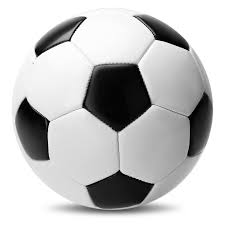

My first favourite thing is soccer. Soccer is a sport involving kicking a ball into a net to score a point. This game is team based and heavily relies on team work and strategies
My second favourite thing is studying. Studying helps me relax and focus in stressfull times. I also like to use Quizlet to help me with studying. Things that I study for are:
My last favourite thing is gaming. Gaming involves using tactical strategies to take advantage of the other team and be able to win against them. that is one main reason that I like to game as it uses a lot of thinking skill and reaction time. It has also been proven to increase reaction time in people as it is alright to play about 1 hour per day to improve and keep the reaction time of the person the same. I like to play a game called rainbow six siege for those reasons.
I like to talk with my family members about things. This helps me get along with them more and makes me more confident when speaking with others. This also makes me more connected with my family members and I will be able to understand what they go through from these expieriences. This also allows me to help them during times of needs and figure out ways to solve issues with them. I also like using youtube to help me find some socializing techniques
thanks to w3schools for the references